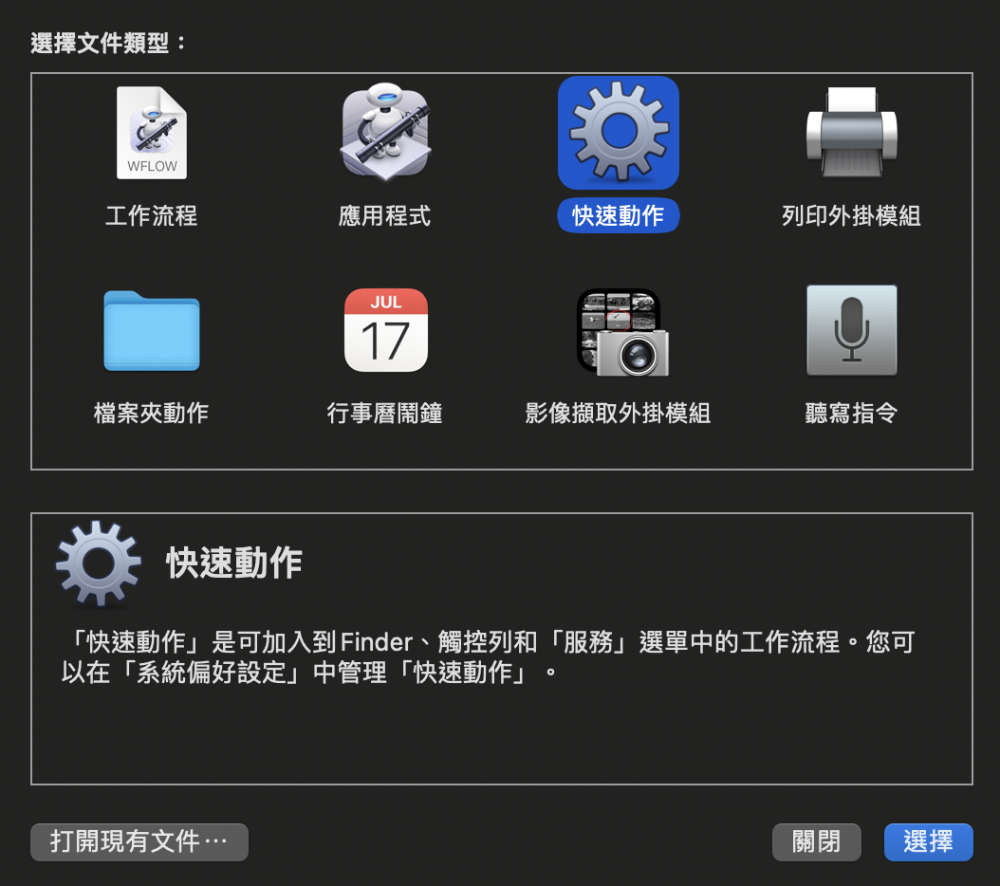
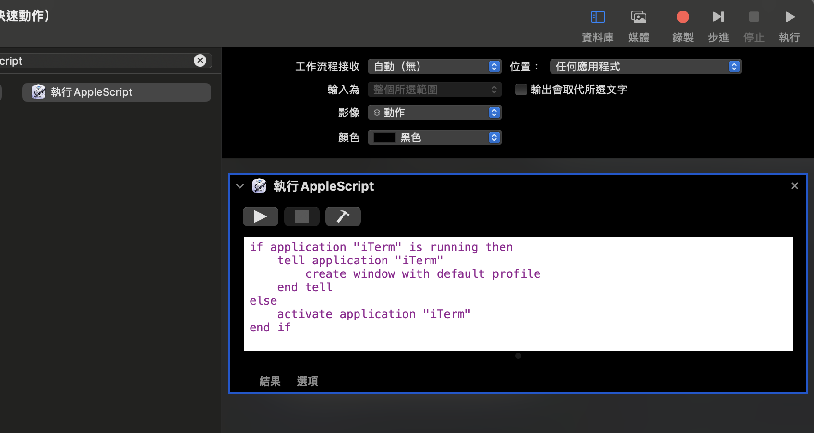
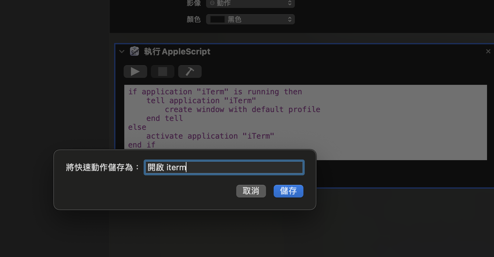
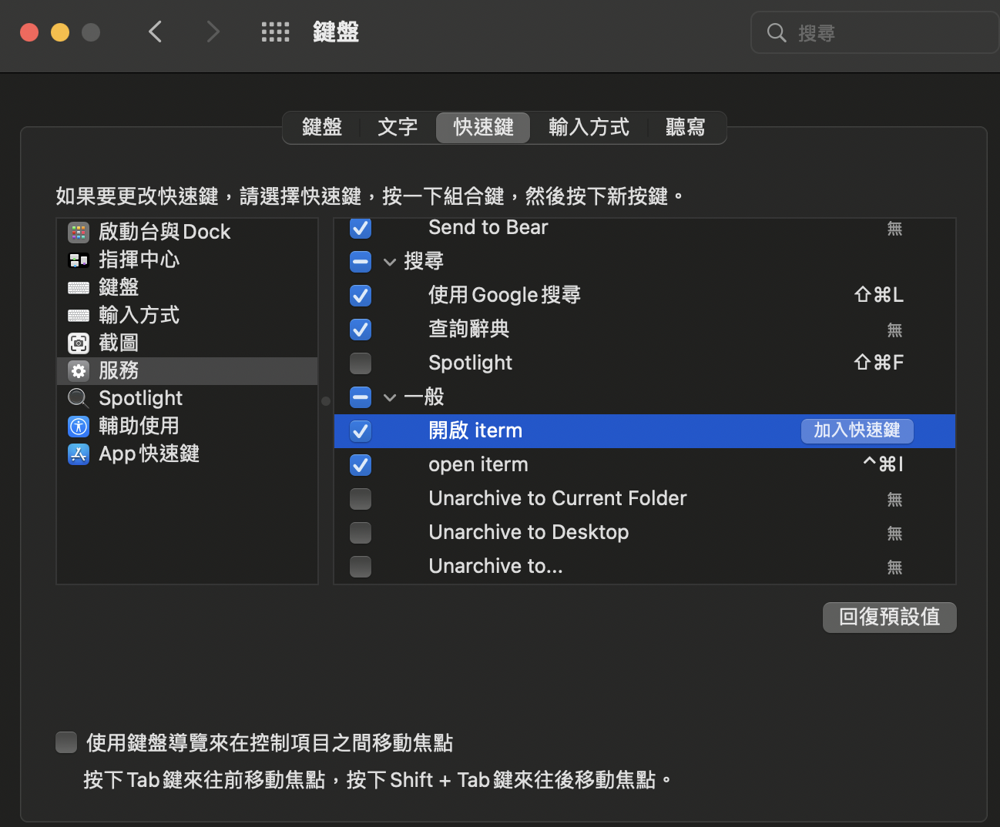
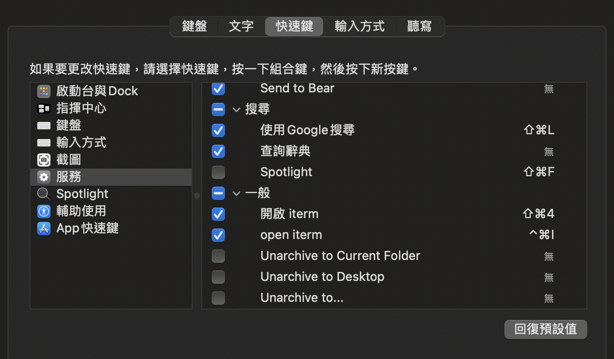

前言
各位好，今天我想分享如何在 Mac 中使用快捷鍵開啟 iterm。會使用到的工具包含 Applescript 和 Automator。
在開發的過程中我經常需要開啟 iterm ，雖然透過 spotlight 開啟也很方便，但還是希望能更節省時間，所以今天研究了一下怎麼快速使用快捷鍵開啟。
Applescript 撰寫:寫自動化腳本
AppleScript 是一種腳本語言可以用來控制執行於 Mac OS 上的程式，後面我們會用到它。首先我們要打開 Automator，選擇「快速動作（Quick Action）」

接著在左方的 Menu 選單中透過搜尋的方式找到「執行 AppleScript」，點擊兩下，右方會出現 AppleScript 。接著貼上以下語法：
1 | if application "iTerm" is running then |

完成後儲存檔案，這裡我們命名為「開啟 iterm」

快捷鍵設定
打開「系統偏好設定」>「鍵盤」>「快速鍵」>「服務」>「一般」，就能看到我們剛剛設定的「開啟 iterm」。

最後就只需要點擊「加入快速鍵」，並在鍵盤中敲上我們想使用的快捷鍵即可囉(這裡加入了 shift+cmd+4)。

結語
希望上面的整理有幫到大家。AppleScript 真的好方便，之後再來研究一下還有什麼酷東西可以玩。